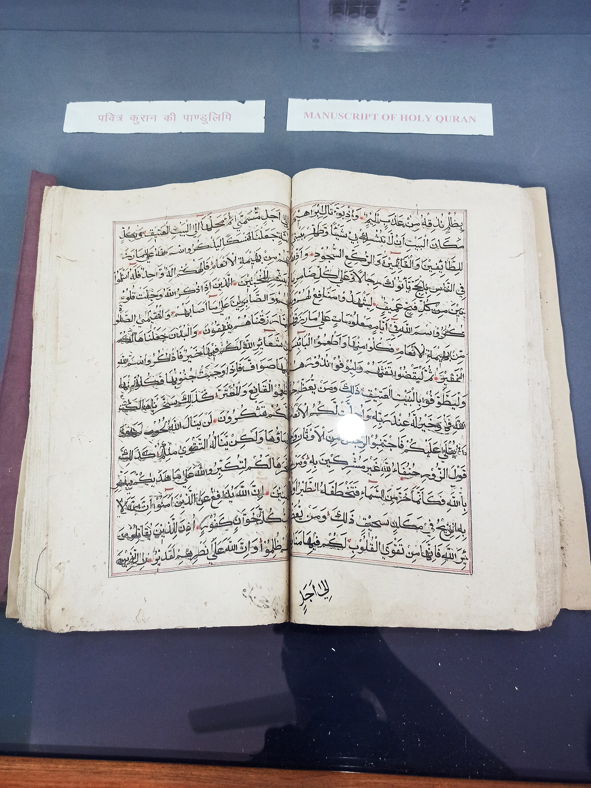

Как совершается развод (талак) в исламе: талак, идда, хул' и правовой порядок
Талак — порядок расторжения брака в исламе, разрешённый, но рассматриваемый как крайняя мера. Этот справочник на основе источников и устоявшихся фактов объясняет виды талака, идду (срок ожидания), хул' (развод по инициативе жены), фасх (судебное расторжение) и правовой порядок в Узбекистане. Цель — не вынесение фетвы, а разъяснение основных понятий.

Талак — порядок расторжения исламского брака. В классической юриспруденции талак разрешён (халяль), но перед его совершением рекомендуются примирение и арбитраж (назначение двух арбитров, упомянутое в суре ан-Ниса 4:35); талак рассматривается как крайняя мера. Известен хадис, передаваемый в том смысле, что «самое ненавистное из дозволенного перед Аллахом — развод» (Абу Дауд 2178; Ибн Маджа 2018); однако достоверность этого хадиса оспаривается среди учёных — одни (ас-Суюти, аль-Хаким) оценили его как сахих, а современный учёный-мухаддис аль-Албани и ряд классических учёных — как слабый (мурсаль). Поэтому он приводится как «хадис спорной достоверности».
Идда (срок ожидания)
После талака женщина соблюдает идду — срок ожидания. Согласно аятам Корана: для менструирующей женщины — три менструальных цикла (аль-Бакара 2:228); для беременной — до родов (ат-Талак 65:4); для женщины, у которой нет менструаций (до наступления или после прекращения), — три месяца (ат-Талак 65:4). Идда вдовы — четыре месяца и десять дней (аль-Бакара 2:234). У идды две основные цели: подтвердить отсутствие беременности (прояснить родство) и сохранить возможность примирения при возвратном разводе.
Виды талака
Талак радж'и (возвратный) — первое или второе произнесение; муж может вернуть жену в течение идды без нового договора. По окончании идды это становится так называемым «малым» безвозвратным разводом (аль-байнуна ас-сугра), и супруги могут вновь вступить в брак по новому брачному договору. Талак ба'ин (безвозвратный): после трёх произнесений наступает «большой» безвозвратный развод (аль-байнуна аль-кубра); после этого, чтобы женщина вернулась к тому же мужчине, она должна сначала вступить в настоящий (осуществлённый) брак с другим мужчиной, который затем сам прекратится (никах халала). Цель этого условия — не допустить легкомысленного использования развода.

Хул' и фасх
Хул' — развод по инициативе жены, обычно путём возврата махра (или его части) в обмен на выход из брака; его основа дана в аль-Бакара 2:229. Фасх (или тафрик) — расторжение брака кадием или судом по таким основаниям, как жестокость, отказ в содержании, оставление или иные серьёзные причины. Общее правило о махре: если муж разводится после осуществления брака, полный махр остаётся за женой; при хул' жена обычно возвращает махр.
Школы и «тройной талак за одно заседание»
Суннитская юриспруденция различает талак ас-сунна (одобренную форму) и талак аль-бид'а (нововведённую форму). Произнесение трёх талаков сразу порицается во всех четырёх суннитских школах, но традиционно считалось юридически действительным (окончательный, большой развод); шиитская юриспруденция вовсе не признаёт талак аль-бид'а. Классические учёные расходились в том, считать ли такое тройное произнесение одним талаком или тремя. В новейшее время ряд стран с мусульманским большинством ограничил мгновенный тройной талак: в Индии, например, Закон о мусульманских женщинах (защите прав в браке) 2019 года объявил мгновенный тройной талак (талак-е-биддат) недействительным и уголовным преступлением, наказуемым лишением свободы до трёх лет. (Источник: Правительство Индии, PIB.)
Правовой порядок в Узбекистане
В Узбекистане развод регулируется Семейным кодексом (принят 30 апреля 1998 года, вступил в силу с 1 сентября 1998 года). Юридическую силу имеет только гражданский брак, зарегистрированный государством; брак, заключённый лишь по религиозному обряду (а значит, и религиозный талак), сам по себе не влечёт гражданско-правовых последствий. При взаимном согласии, отсутствии несовершеннолетних детей и имущественного спора супруги подают совместное заявление в орган ЗАГС и получают свидетельство о расторжении брака. При наличии несовершеннолетних детей или спора дело рассматривает суд; решение суда затем регистрируется в органе ЗАГС. Брак считается расторгнутым со дня его регистрации в органе ЗАГС. По закону муж не вправе требовать развода во время беременности жены и в течение одного года после рождения ребёнка. (Источник: Семейный кодекс Республики Узбекистан.)
Заключение
В исламе талак разрешён, но имеет чётко определённые правила и рассматривается как то, к чему не следует относиться легкомысленно: срок идды, различие между возвратным и безвозвратным разводом, хул' и судебное расторжение, вопрос о махре — каждое из этого регулирует права и обязанности. В Узбекистане же одного религиозного развода недостаточно — чтобы иметь юридическую силу, развод должен быть оформлен через государственный орган (ЗАГС или суд). По конкретному решению и своей ситуации каждому человеку рекомендуется обращаться к квалифицированным религиозным и юридическим специалистам.